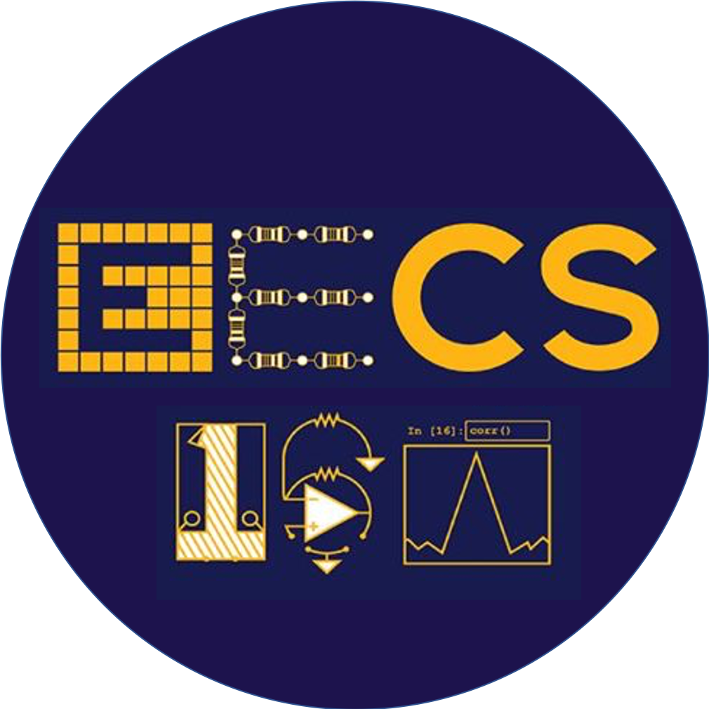

Grace Kuo
I am a research scientist at Reality Labs Research at Meta where I work on novel display and imaging systems for virtual and augmented reality. I graduated with my PhD from the department of Electrical Engineering and Computer Science at UC Berkeley, advised by Professor Laura Waller and Professor Ren Ng.
My research is in computational imaging, which is the joint design of hardware and algorithms for imaging and display systems. I work at the intersection of optics, signal processing, computer graphics, and optimization.
Research
Multisource Holography
Grace Kuo, Florian Schiffers, Douglas Lanman, Oliver Cossairt and Nathan MatsudaACM Siggraph Asia 2023
arXiv / supplement
We propose an architecture for speckle reduction in holographic displays that uses an array of mutually incoherent sources and two sequential spatial light modulators. Multisource holography can suppress speckle in a single frame without sacrificing resolution.
Perspective-Correct VR Passthrough Without Reprojection
Grace Kuo, Eric Penner, Seth Moczydlowski, Alexander Ching, Douglas Lanman, and Nathan MatsudaACM Siggraph 2023
Siggraph Emerging Technologies Best in Show
pdf / video / blog
"Flamera" (rhymes with camera) is a VR passthrough headset that uses a novel optical design to directly capture the exact rays of light that would have gone into the eye, enabling accurate, low latency passthrough.
High Resolution Étendue Expansion for Holographic Displays
Grace Kuo, Laura Waller, Ren Ng, and Andrew MaimoneACM Siggraph 2020
Holographic displays can generate high quality 3D images, but they suffer from a tradeoff between field-of-view and eyebox size. Here, we break the tradeoff for dense, high resolution images using a scattering mask and optimization with perceptually-inspired loss functions.
On-Chip Fluorescence Microscopy with a Random Mircolens Diffuser
Grace Kuo, Fanglin Linda Liu, Irene Grossrubatscher, Ren Ng, and Laura WallerOptics Express 2020
We present a flat, on-chip, fluorescence microscope, which uses a diffuser in place of a traditional microscope objective. In addition to being inexpensive and compact, our system has a practical working distance, can capture volumetic information in a single shot, and features a new diffuser design that is robust to noise.
Fourier DiffuserScope: Single-shot 3D Fourier Light Field Microscopy with a Diffuser
Fanglin Linda Liu, Grace Kuo, Nick Antipa, Kryollos Yanny, and Laura WallerOptics Express 2020
Fourier DiffuserScope is a 3D fluorescence microscope capable of capturing large, high-resolution volumes at video rates. We demonstrate that Fourier DiffuserScope outperforms light field microscopy both theoretically and in numerical simulation, and we show results from an experimental prototype.
Learned Reconstructions for Practical Mask-based Lensless Imaging
Kristina Monakhova, Joshua Yurtsever, Grace Kuo, Nick Antipa, Kyrollos Yanny, and Laura WallerOptics Express 2019
Lenless cameras can be smaller and less expensive than traditional imaging systems, but the reconstructed images suffer from long compute times and reduced image quality. Here, we improve perfomance by unrolling the traditional model-based optimization algorithm and learning the model parameters from experimentally-captured ground truth data.
DiffuserCam: Lensless Single Exposure 3D Imaging
Grace Kuo*, Nick Antipa*, Reinhard Heckel, Ben Mildenhall, Emrah Bostan, Ren Ng, and Laura WallerOptica 2018
We demonstrate an easy-to-build, compact computational camera for single-shot 3D imaging. Our system uses a diffuser (a bumpy piece of plastic) to encode 3D information into a 2D measurement. By using a physical approximation and a simple calibration scheme, we solve for the 3D volume in a computationally efficient way.
Build your own DiffuserCam: Tutorial
Camille Biscarrat*, Shreyas Parthasarathy*, Nick Antipa, Grace Kuo, and Laura WallerOnline Tutorial
Build your own DiffuserCam using a Raspberry Pi camera sensor and scotch tape as the diffuser! Our tutorial includes an overview of DiffuserCam, instructions for putting together your camera, and iPython notebooks for reconstructing images from your raw data.
Teaching

EECS 16A — Summer 2020 (co-instructor)
EECS 16A — Fall 2018 (teaching assistant)
EECS 16A — Spring 2018 (teaching assistant)
EECS 16A (Designing Information Devices and and Systems I) is an introductory undergraduate course aimed at incoming electrical engineering and computer science students. The course covers linear algebra, circuits, and signal processing and features hands-on labs. In Summer 2020, we taught the first fully online version of this course, including labs!